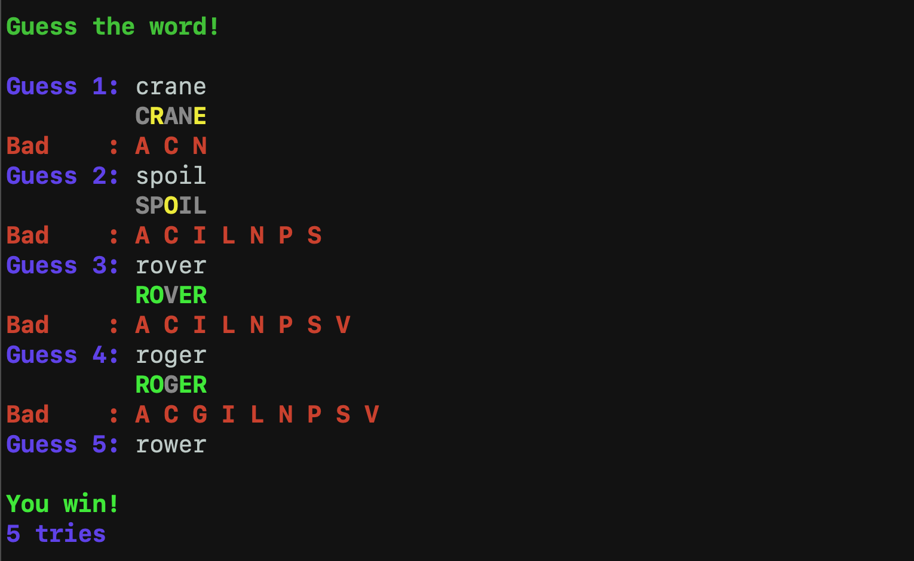
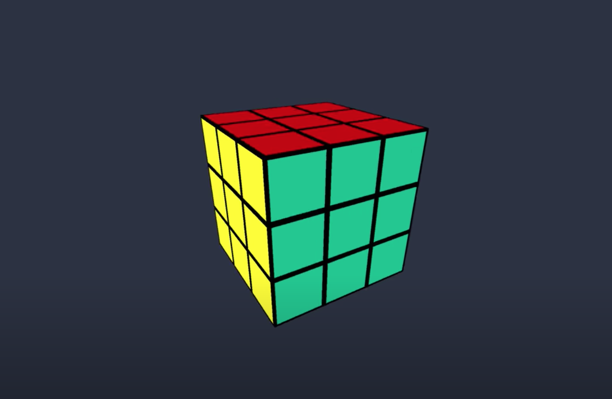
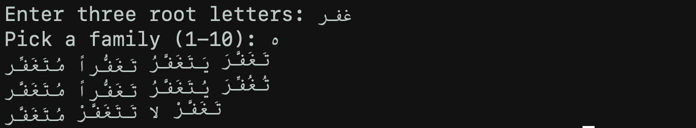

- - GitHub
- - Wordle Remake
- I developed my own version of the popular online word guessing game,
Wordle. I wrote this solely
in C++ as I was most comfortable doing so, but I plan on using JavaScript to make it playable as a web
game rather than just a C++ executable.
 - - Rubik's Cube Solver
- I am currently working on a program that can solve the Rubik's Cube given any
scramble (set of moves that puts the cube in a random, unsolved state). I'm using a software sketchbook
and development platform based on Java called Processing to design the graphics and motion of the cube
itself, and C++ for the algorithms necessary to solve the cube. The method I'm basing the algorithms off
of is called the Fridrich Method, often referred
to as CFOP to abbreviate the four steps of the process.
 - - Sarf Generator
- I wrote a program that takes in root words in Arabic, and outputs all the possible conjugations of that
word. I wrote this in Python and used the rules of
Sarf, or
Arabic morphology, to tell the program what to output. The user also has the option to choose a particular
family of words, which provides a smaller subset of words from the given root. I made this program after
noticing that nothing like this exists on the Internet or as a mobile app. As I began learning Arabic, I
found it very difficult to memorize all the rules of Sarf, so I thought it would be useful to have a
program that "checks your work" for you, and can be used as a study tool. I plan to develop this program
more in the future, and hopefully pitch the idea to Arabic learning institutions who can then provide
the tool to students.
